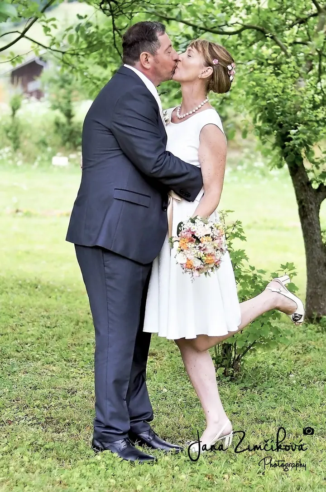
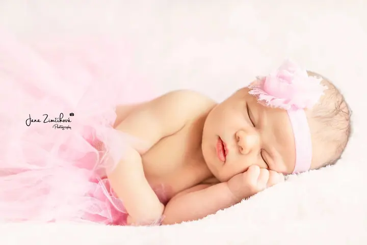
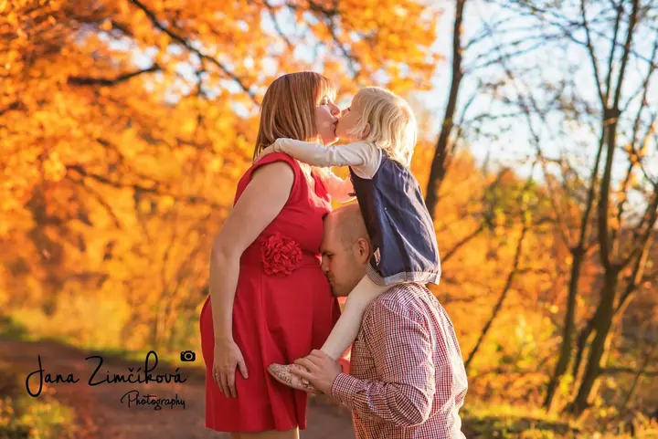
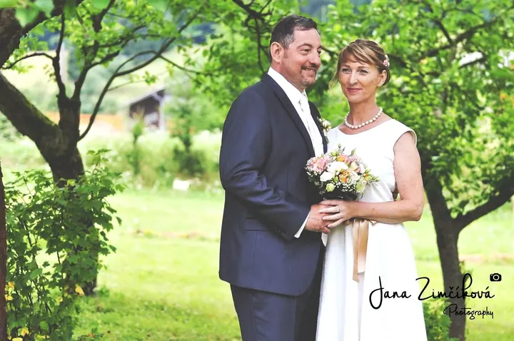
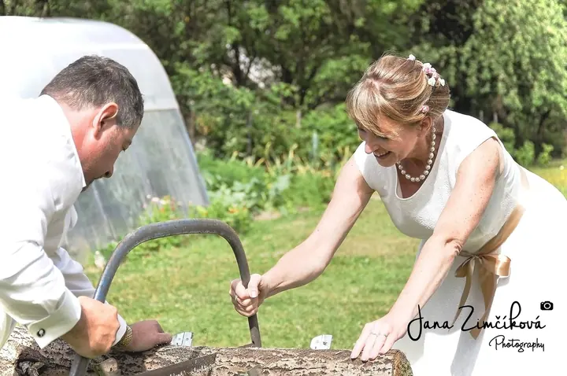

Newborn focení
Aranžované i lifestyle fotky miminek v ateliéru nebo u vás doma, ideálně během prvních 14 dní. Rekvizity, oblečky, čelenky i věnečky mám připravené, takže se nemusíte o nic starat.





Jmenuji se Jana Zimčíková a fotím miminka, rodiny s dětmi i svatby v Moravskoslezském kraji. Mám ráda pozitivní a veselé lidi, a tak se snažím, aby focení bylo přátelské a uvolněné a abyste si ho užili stejně jako já.
Více o mně„Nikdy totiž nebudu tak dobrá, abych nemohla být ještě lepší.“
— Jana Zimčíková
Aranžované i lifestyle fotky miminek v ateliéru nebo u vás doma, ideálně během prvních 14 dní. Rekvizity, oblečky, čelenky i věnečky mám připravené, takže se nemusíte o nic starat.
Focení rodin, dětí, párů i portrétů venku nebo v ateliéru, 1–2 hodiny v přátelské a uvolněné atmosféře. Nabízím také dortové narozeninové focení s výzdobou v barvě podle domluvy.
Focení v exteriéru nebo v ateliéru, kde si můžete zapůjčit těhotenské šaty a další rekvizity. Domluvit se můžeme i na tematickém focení.
Balíčky podle délky focení, od samotného obřadu a skupinové fotky až po přípravy nevěsty a celý den. Co se za daný čas nafotí, domluvíme podle vašeho přání.
Narodila jsem se v Bílovci, do svých 22 let jsem žila v Ostravě a dnes bydlím s manželem a synem v Děrném nedaleko Fulneku. Nikdy mě nenapadlo, že bych mohla být fotografkou. První zrcadlovku, Nikon D90, jsem si koupila jen proto, abych měla hezčí rodinné fotky a fotky z výletů.
Brzy jsem zjistila, že hezčí fotky nedělá zrcadlovka sama o sobě. Začala jsem se po malých krůčcích učit, nejdřív ovládat foťák, pak kompozici, světlo a úpravy. Došlo mi, že mě to neskutečně baví, a učím se dodnes. Nikdy totiž nebudu tak dobrá, abych nemohla být ještě lepší.
Fotím hlavně miminka, děti, těhotenské a rodinné fotky, portréty i boudoir a fotím také svatby. Na každé focení se snažím vymyslet něco nového, ale ráda vyslechnu i vaše nápady a inspirace. A když mi zbyde volný čas, fotím zvířata.
Napište mi e-mailem, přes Facebook nebo zavolejte. Termín zarezervujeme složením rezervačního poplatku.
Poradím vám s oblečením, ideálně sladit dvě barvy v podobných odstínech. Rekvizity a doplňky mám připravené.
Fotíme venku, v ateliéru nebo u vás doma, obvykle 1–2 hodiny. Newborn focení může trvat až 4 hodiny podle nálady miminka.
Z nafocených fotek si vyberete ty do balíčku, já je upravím a vyretušuji. Dostanete je v elektronické podobě i vytištěné.
Ideálně během prvních 14 dní, nejlépe 6. nebo 7. den po narození, kdy miminka hodně spí. Napište mi ještě z porodnice a domluvíme přesný termín.
Nemusíte nic, rekvizity, oblečky i doplňky mám. Pokud chcete něco vlastního, třeba plyšáčka, klidně ho vezměte. Miminku oblečte něco, co jde snadno svléknout.
Fotím hlavně v Moravskoslezském kraji, ale ráda přijedu i jinam. Nad 30 km od mého bydliště účtuji 5 Kč za každý kilometr tam i zpět.
Neupravené fotografie neposkytuji. Ke každému balíčku patří upravené a vyretušované fotky a jejich tisk, další fotky si můžete dokoupit.